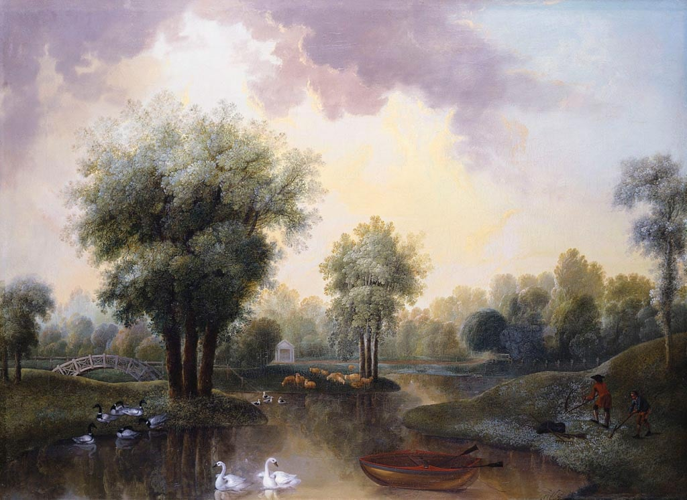

Garden Design
Your garden style represents an environment you share with the world. Each design reflects history, place, and personal expression.
From ancient Egypt and Persia to modern movements, garden design has shaped culture for centuries.
